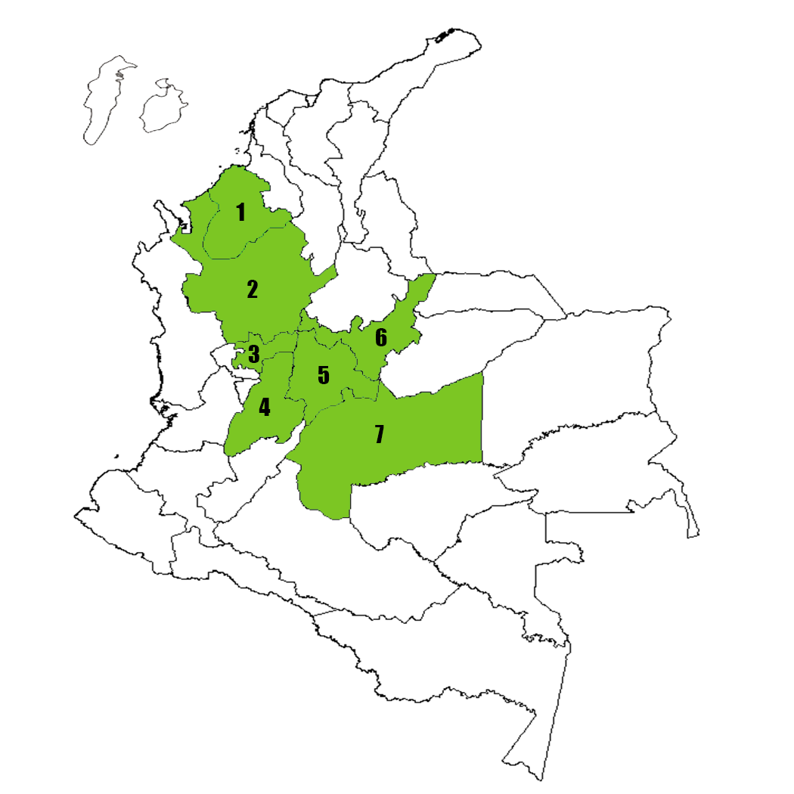

Rhipicephalus microplus (Canestrini, 1888)
Sinonimia
- Boophilus microplus
Nombre Comun
- Garrapata del ganado
- Garrapata del ganado del sur
- Garrapata colorada
BIONOMIA
Puede presentar de 3-6 generaciones anuales dependiendo de las condiciones ambientales. (Nava et al, 2017) Se encuentra en el trópico y subtrópico. (Nava et al, 2017) Tiene un solo hospedero. Los huevos hacen eclosión en el medio ambiente. Pueden vivir sin alimento hasta 6 meses en ambientes precarios.
DISTRIBUCIÓN EN COLOMBIA

- Córdoba
- Antioquia
- Caldas
- Tolima
- Cundinamarca
- Boyacá
- Meta
IMPORTANCIA MEDICA
Transmisor de:
- Los registros de R. microplus mordiendo a humanos son ocasionales.
- Vector de diferentes especies de Babesia.
- Se ha descrito como vector de Borrelia burgdorferi causante de la enfermedad de lyme
IMPORTANCIA VETERINARIA
Transmisor de:
- Es el principal ectoparásito del ganado en áreas tropicales y subtropicales.
- Vector único de agentes causales de babesisos bovina como Babesia bovis y Babesia bigemina.
- Transmisor de Anaplasma marginale.
- Facilita la aparición de miasis por Cochliomyia hominivorax o gusano barrenador.
TAXONOMIA

- Cuerpo ovalado.
- Superficie notal y ventral cubierta por largas setas blanquecinas.
- Ojos pequeños y planos.
- Escápulas redondeadas, surcos cervicales, poco profundos apenas perceptibles.
- Escudo sin adornos, más ancho antes del nivel de los ojos, con pocas setas más numerosas en la parte anterior.
Ninfa

- Base del capítulo hexagonal dorsalmente.
- Palpos más cortos que el hipostoma.
- Artículos II y III ventralmente con un proceso retrógrado e interno corto.
- Hipostoma corto y romo. Fórmula dental 3/3.
- Coxa II y IV cada uno con una sola espuela externa roma pequeña.
- Placas espiraculares redondeadas.
- Coxa I con dos espuelas romas cortas.
Ninfa
- Cuerpo oval.
- Superficie dorsal cubierta por numerosas, largas y pálidas setas, dispuestas en hileras.
- Ojos pequeños y planos.
- Escápulas redondeadas, surcos cervicales, poco profundos apenas perceptibles.
- Escudo sin adornos.
- Surco marginal ausente.
Adulto Macho

- Superficie ventral cubierta por numerosas setas.
- Base del capítulo hexagonal dorsalmente. cornua pequeña.
- Palpos más cortos que el hipostoma.
- Artículos II y III ventralmente con un proceso retrógrado e interno corto.
- Hipostoma corto y romo. Fórmula dental 4/4.
- Coxa II y III cada una con un espolón externo corto y único.
- Placas espiraculares redondeadas.
- Abertura genital ubicada entre la coxa II.
- Presencia de apéndice caudal.
- Presencia de dos pares de placas adanales de forma variable, generalmnete subrectangular.
- Margen posterior variable pero usualmente con el ángulo postero-intemal producido como un espolón no puntudo.
Adulto Macho

- Coxa I con dos espolones cortos, triangulares, subiguales en tamaño.
Adulto Macho

- Coxa IV sin espuelas con una prominencia sobresaliente.
Adulto Macho

- Cuerpo oval.
- Parte notal y ventral con numerosas setas.
- Ojos pequeños y planos.
- Escápulas redondeadas, surcos cervicales, poco profundos apenas perceptibles.
- Escudo con medidas de 1.0 mm de longitud y 0.9 mm de ancho; sin adornos, más ancho antes del nivel de los ojos, con setas en la parte anterior.
Adulto Hembra

- Base del capítulo hexagonal dorsalmente.
- Área oval porosa.
- Palpos más cortos que el hipostoma.
- Artículos II y III ventralmente con un proceso retrógrado e interno corto.
- Hipostoma corto y romo. Fórmula dental 4/4.
- Abertura genital ubicada entre la coxa II.
- Placas espiraculares redondeadas.
Adulto Hembra

- Coxa I con dos espuelas romas cortas.
Adulto Hembra

- Coxa II y IV cada uno con una sola espuela externa roma pequeña.
Adulto Hembra
REFERENCIAS
- Nava, S., Vezal, J.M., González, D., Matins, T., Guglielmone, A. (2017). Ticks of the Southern Cone of America. Pg 256-262. Elsevier
- Cortés, JA., Betancourt JA., Argüelles J,. Pulido L. Distribución de garrapatas (Boophilus) microplus en bovinos y fincas del Altiplano cundibuyacense (Colombia). (2010). Corpoica Cienc. Tecnol. Agropecu. 11(1), 73-84
- Pulido L., Rudas A., Betancourt J. Grant W., Vilchez S. Distribuciín inusual y potencial de la garrapata común del ganado, Rhipicephalus (Boophilus) miicroplus, en zonas tropicales de alta montaña de los Andes colombianos. (2015). Biota Colombiana. 16(2), 75-95
- CFSPH. (2007). Rhipicephalus (Boophilus microplus). The Center for Food Security & Public Health